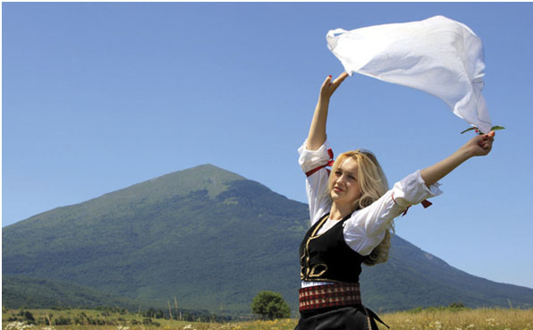

Na visoravni iznad sela Vrmdža nalaze se ruševine drevnog Vrmdžanskog grada. Izgrađen je između 4. i 6. veka radi odbrane vizantijske teritorije od upada Avara i Slovena. U srednjem veku je bio stanište lokalne vlastele, a srušen je 1413. god., u borbama za turski presto između sultana Muse i odmetnika Hamuz bega.
Crkva Sv. Trojice nalazi se u Vrmdži, na brdu Crkovcu. Izgrađena je početkom 19. veka, a u neposrednoj blizini nalazi se i crkveni konak. U crkvi se nalaze vredne ikone rađene na platnu kao i veći broj diptiha, manjeg formata, slikanih na drvetu.
Etno muzej u Vrmdžije otvoren na Uskrs 2010. god. i nalazi se u zgradi Parohijskog doma. Postoji stalna postavka narodnih nošnji, grnčarije, tkanina i alata. Eksponate su prikupili meštani sela Vrmdža, Mužinac i Trgovište. Posetioci mogu videti celokupan postupak izrade narodnih nošnji, na tradicionalan način.
